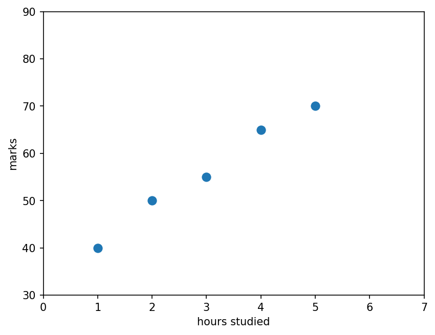
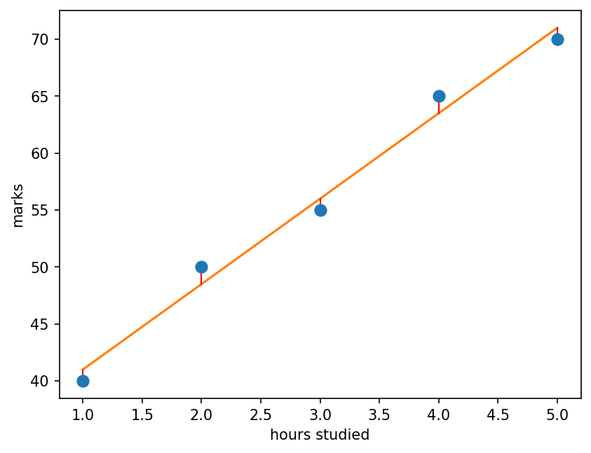
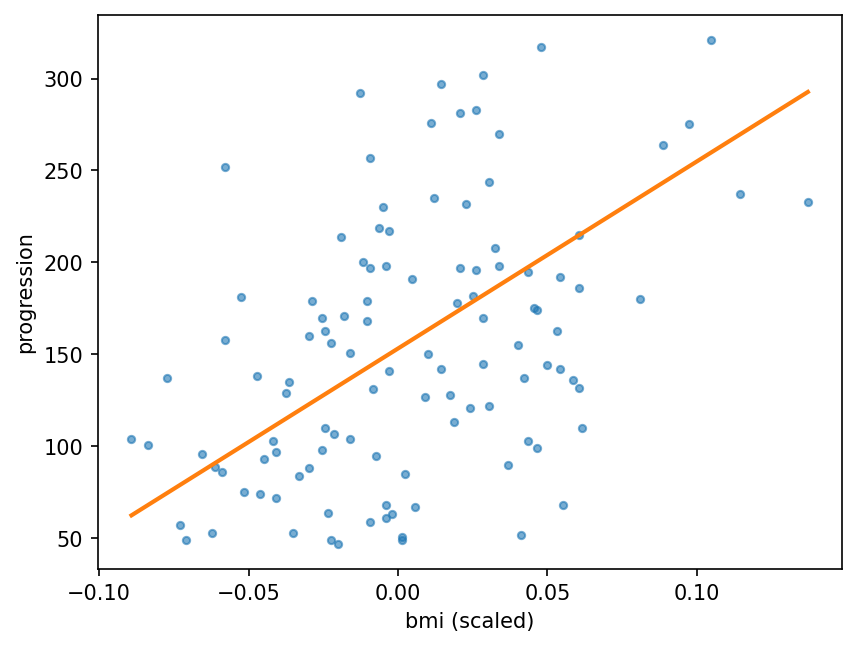

Predicting numbers with a straight line
Introduction to Data Science and Machine Learning · Md Mahbub E Noor · University of Barishal
model = LinearRegression() model.fit(X, y) model.predict([[6]])
Invented data: hours studied per week and exam marks. What mark would we expect for 6 hours?
import matplotlib.pyplot as plt
hours = [1, 2, 3, 4, 5]
marks = [40, 50, 55, 65, 70]
plt.scatter(hours, marks, s=60)
plt.xlabel("hours studied")
plt.ylabel("marks")
plt.xlim(0, 7)
plt.ylim(30, 90)
plt.show()
slope = 7.5
intercept = 33.5
h = 6
predicted = slope * h + intercept
print(predicted)
78.5
Try the line marks = 8 × hours + 30. Error = actual - predicted. MAE = average of the error sizes.
# guessed line: # 8 * hours + 30 # MAE = (2+4+1+3+0) / 5 # = 2.0 marks
| hours | actual | predicted | error | |error| |
|---|---|---|---|---|
| 1 | 40 | 38 | 2 | 2 |
| 2 | 50 | 46 | 4 | 4 |
| 3 | 55 | 54 | 1 | 1 |
| 4 | 65 | 62 | 3 | 3 |
| 5 | 70 | 70 | 0 | 0 |
| MAE | 2.0 |
Next row: arrow key or the ▶ button. Predict it first!
slope = sum of (h - mean h)(m - mean m) / sum of (h - mean h)². Means: hours 3, marks 56.
# slope = 75 / 10 = 7.5 # intercept = 56 - 7.5 * 3 # = 33.5 # best line: # marks = 7.5 * hours + 33.5
| h | m | h - 3 | m - 56 | product | (h - 3)² |
|---|---|---|---|---|---|
| 1 | 40 | -2 | -16 | 32 | 4 |
| 2 | 50 | -1 | -6 | 6 | 1 |
| 3 | 55 | 0 | -1 | 0 | 0 |
| 4 | 65 | 1 | 9 | 9 | 1 |
| 5 | 70 | 2 | 14 | 28 | 4 |
| sum | 75 | 10 |
Next row: arrow key or the ▶ button. Predict it first!
[[1], [2], ...]fit finds the slope (coef_) and interceptpredict answers new questions: 6 hours gives 78.5from sklearn.linear_model import LinearRegression X = [[1], [2], [3], [4], [5]] y = [40, 50, 55, 65, 70] model = LinearRegression() model.fit(X, y) print(model.coef_, model.intercept_) print(model.predict([[6]]))
[7.5] 33.5 [78.5]
The line passes as close as possible to all points at once. The red segments are the errors it tries to keep small.
pred = model.predict(X)
plt.scatter(hours, marks, s=60, zorder=3)
plt.plot(hours, pred, color="tab:orange")
for h, m, p in zip(hours, marks, pred):
plt.plot([h, h], [m, p], color="red", lw=1)
plt.xlabel("hours studied")
plt.ylabel("marks")
plt.show()
WATCH FOR
Silent video: press play, pause any time.
from sklearn.datasets import load_diabetes
from sklearn.model_selection import train_test_split
from sklearn.metrics import mean_absolute_error
data = load_diabetes(as_frame=True)
X = data.data[["bmi"]]
y = data.target
X_tr, X_te, y_tr, y_te = train_test_split(
X, y, test_size=0.25, random_state=0)
model = LinearRegression().fit(X_tr, y_tr)
pred = model.predict(X_te)
print(round(mean_absolute_error(y_te, pred), 1))53.3
The trend is real, but patients with the same bmi differ a lot. A line can only capture the average trend.
plt.scatter(X_te["bmi"], y_te, s=12, alpha=0.6)
xs = X_te.sort_values("bmi")
plt.plot(xs["bmi"], model.predict(xs),
color="tab:orange", lw=2)
plt.xlabel("bmi (scaled)")
plt.ylabel("progression")
plt.show()
from sklearn.metrics import r2_score
for cols in [["bmi"], list(data.data.columns)]:
X = data.data[cols]
X_tr, X_te, y_tr, y_te = train_test_split(
X, y, test_size=0.25, random_state=0)
m = LinearRegression().fit(X_tr, y_tr)
p = m.predict(X_te)
print(len(cols), "features: MAE",
round(mean_absolute_error(y_te, p), 1),
"R2", round(r2_score(y_te, p), 2))1 features: MAE 53.3 R2 0.16 10 features: MAE 45.1 R2 0.36
X = [[1], [2], [3], [4], [5]] y = [40, 50, 55, 65, 70] small = LinearRegression().fit(X, y) print(small.predict([[20]]))
Use our 5-student model to predict marks for 20 hours of study. Is the answer sensible?
X = [[1], [2], [3], [4], [5]] y = [40, 50, 55, 65, 70] small = LinearRegression().fit(X, y) print(small.predict([[20]]))
[183.5]
bp (blood pressure) instead of bmiX = data.data[["bp"]]
X_tr, X_te, y_tr, y_te = train_test_split(
X, y, test_size=0.25, random_state=0)
...Starter code: replace the ... with your own code
Read the last line of an error first. It names the problem.
| What you typed | What Python says | What it means |
|---|---|---|
LinearRegression().fit([1, 2, 3], [4, 5, 6]) | ValueError: Expected 2D array, got 1D array instead: | X must be 2-D: [[1], [2], [3]]. Python says so in the message. |
LinearRegression().fit([[1], [2]], [4, 5, 6]) | ValueError: Found input variables with inconsistent numbers of samples: [2, 3] | X and y have different numbers of rows. |
LinearRegression().predict([[6]]) | NotFittedError: This LinearRegression instance is not fitted yet. Call 'fit' with appropriate arguments before using this estimator. | The model was never fitted. Call fit first. |
In the lab you can
Opens in a new tab and works offline. All labs: labs/START_HERE.html
y = slope·x + intercept | A straight line |
MAE | Average error size |
R² | Share of variation explained |
LinearRegression() | Fits the best line |
model.coef_ | Slope(s) |
model.intercept_ | Intercept |
mean_absolute_error(y, p) | MAE in code |
r2_score(y, p) | R² in code |
Due before Lecture 10 · [date]
For hours 2, 4, 6 and marks 50, 60, 76: compute the best slope and intercept with the table method. Check with LinearRegression.
For your line, compute the three errors and the MAE by hand.
On diabetes, try three single features of your choice. Report MAE and R² for each in a small table.
Give one real-life example where a line would make an impossible prediction far outside the data.
Plot your best single feature against the target with the fitted line, as in the lecture.
Watch it again at home to revise.